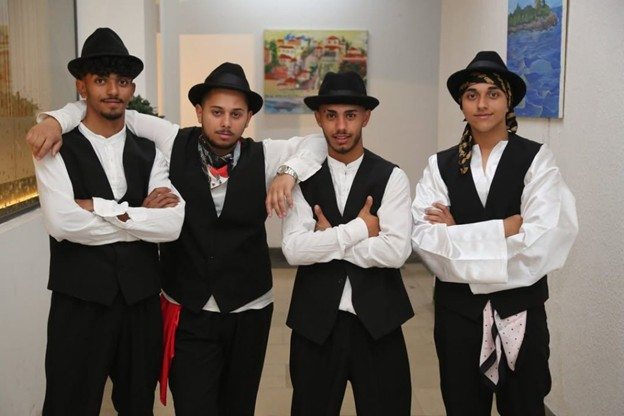

Mladi članovi romske i egipćanske zajednice imaju ključnu ulogu u očuvanju kulturnog identiteta. Oni predstavljaju most između prošlih i budućih generacija, a njihovo aktivno učešće u kulturnim praksama i digitalnoj dokumentaciji omogućava da tradicija ostane živa i relevantna u savremenom društvu. Bez mladih, kulturno naslijeđe se može izgubiti ili izobličiti pod uticajem urbanizacije, migracija i dominantnih kultura.

Uloga mladih nije ograničena samo na pasivno učenje o tradiciji. Oni aktivno učestvuju u organizaciji događaja, izvođenju pjesama i plesova, prenošenju priča i rituala, te kreiranju digitalnih sadržaja koji dokumentuju običaje i vjerovanja zajednice. Kroz ove aktivnosti, mladi ne samo da uče o svom kulturnom naslijeđu, već i razvijaju vještine, samopouzdanje i osjećaj pripadnosti.
Savremeni izazovi, uključujući pristup obrazovanju, migracije i uticaj medija, mijenjaju način na koji mladi doživljavaju kulturu. Mnogi su udaljeni od tradicionalnih praksi i rijetko učestvuju u porodičnim ritualima ili zajedničkim okupljanjima. Zbog toga je važno kreirati platforme i projekte koji motivišu mlade da se uključe, kroz savremene formate poput digitalnih tribina, online radionica i interaktivnih sadržaja.
Projekat Projekt „Romi i Egipćani – Simbolika kulture i identiteta“ upravo pruža ovakvu priliku. Kroz digitalnu platformu mladi mogu učestvovati u kreiranju sadržaja, prikupljanju svjedočanstava, snimanju pjesama i plesova, te dijeljenju svojih iskustava i znanja sa širom publikom. Ovo aktivno učešće ne samo da osnažuje kulturni identitet, već i razvija liderstvo i sposobnost saradnje među mladima.
Uključivanje mladih u očuvanje kulture doprinosi i jačanju zajednice. Kada mladi preuzimaju odgovornost za dokumentovanje i promociju tradicije, stariji članovi zajednice vide da njihovo znanje i iskustvo imaju vrijednost i da neće biti zaboravljeno. To stvara međugeneracijsku povezanost i osjećaj zajedništva, koji su od ključnog značaja za održivost kulturnog identiteta.
Osim toga, uključivanje mladih u kulturne projekte ima važnu ulogu u smanjenju stereotipa i predrasuda. Kroz javne prezentacije, digitalne sadržaje i obrazovne aktivnosti, šira javnost upoznaje mlade kao aktivne nosioce tradicije, a ne pasivne posmatrače. Time se doprinosi interkulturalnom dijalogu i većem poštovanju različitosti u društvu.
Mladi takođe imaju priliku da inovativno pristupe tradiciji, kombinujući stare običaje sa savremenim digitalnim formatima, što omogućava da kultura bude dostupna i razumljiva i novim generacijama koje odrastaju u digitalnom dobu. To pokazuje da očuvanje kulturnog identiteta nije statično, već dinamično i prilagodljivo.
U konačnici, uloga mladih u očuvanju kulturnog identiteta Roma i Egipćana je neprocjenjiva. Oni su ključ za prenošenje vrijednosti, običaja i znanja budućim generacijama, ali i za afirmaciju zajednice u savremenom društvu. Aktivno učešće mladih osigurava kontinuitet tradicije, jača zajedništvo i omogućava da kultura ostane vidljiva, relevantna i cijenjena.
Napomena: Svi stavovi, mišljenja i sadržaji objavljeni na ovom portalu predstavljaju isključivu odgovornost autora i ne odražavaju nužno stavove ili politike Fonda za zaštitu i ostvarivanje manjinskih prava, koji je podržao ovaj projekat.